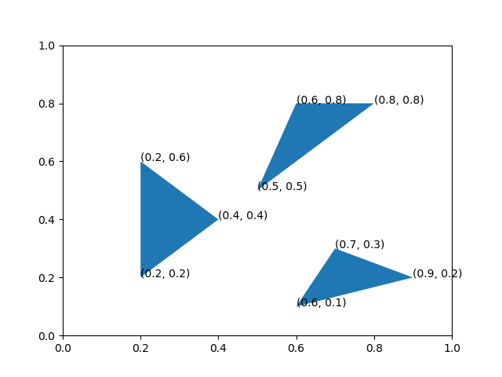

Python Packaging¶
A well structured project is easy to navigate and make changes and improvements to. It’s also more likely to be used by other people – and that includes you a few weeks from now!
Organization basics¶
We want to write a Python program that draws triangles:
{kind=link}
We use the the Polygon
class of the matplotlib library and write a script called
draw_triangles.py.
import matplotlib.pyplot as plt
fig, ax = plt.subplots()
ax.set_xlabel('x')
ax.set_ylabel('y')
patch = plt.Polygon([
(0.2, 0.2),
(0.2, 0.6),
(0.4, 0.4)
])
ax.add_patch(patch)
ax.text(0.2, 0.4, '(0.2, 0.4)')
ax.text(0.2, 0.6, '(0.2, 0.6)')
ax.text(0.2, 0.4, '(0.2, 0.4)')
patch = plt.Polygon([
(0.6, 0.8),
(0.8, 0.8),
(0.5, 0.5)
])
ax.add_patch(patch)
ax.text(0.6, 0.8, '(0.6, 0.8)')
ax.text(0.8, 0.8, '(0.8, 0.8)')
ax.text(0.5, 0.5, '(0.5, 0.5)')
patch = plt.Polygon([
(0.6, 0.1),
(0.7, 0.3),
(0.9, 0.2)
])
ax.add_patch(patch)
ax.text(0.6, 0.1, '(0.6, 0.1)')
ax.text(0.7, 0.3, '(0.7, 0.3)')
ax.text(0.9, 0.2, '(0.9, 0.2)')
plt.show()
Do you think this is a good way to organize the code?
What do you think could be improved in the script draw_triangles.py?
Functions¶
Functions facilitate code reuse. Whenever you see yourself typing the same code twice in the same program or project, it is a clear indication that the code belongs in a function.
A good function:
has a descriptive name.
draw_triangleis a better name thanplot.is small – no more than a couple of dozen lines – and does one thing. If a function is doing too much, then it should probably be broken into smaller functions.
can be easily tested – more on this soon.
is well documented – more on this later.
In the script draw_triangles.py above,
it would be a good idea to define a function
called draw_triangle that draws a single triangle,
and re-use this function every time we need to draw a triangle:
import matplotlib.pyplot as plt
def draw_triangle(points, ax=None):
if ax is None:
ax = plt.gca()
else:
fig, ax = plt.subplots()
ax.set_xlabel('x')
ax.set_ylabel('y')
patch = plt.Polygon(points)
ax.add_patch(patch)
for pt in points:
x, y = pt
ax.text(x, y, '({}, {})'.format(x, y))
draw_triangle([
(0.2, 0.2),
(0.2, 0.6),
(0.4, 0.4)
])
draw_triangle([
(0.6, 0.8),
(0.8, 0.8),
(0.5, 0.5)
])
draw_triangle([
(0.6, 0.1),
(0.7, 0.3),
(0.9, 0.2)
])
plt.show()
Python scripts and modules¶
A module is a file containing a collection of Python definitions and statements,
typically named with a .py suffix.
A script is a module that is intended to be run by the Python interpreter.
For example, the script draw_triangles.py can be run from the command-line
using the command:
$ python draw_triangles.py
If you are using an Integrated Development Environment (IDE) such as Spyder, PyCharm, or Visual Studio Code then the script can be run by opening it in the IDE and clicking on the “Run” button.
Modules, or specific functions from a module can be imported
using the import statement:
import draw_triangles
from draw_triangles import draw_triangle
When a module is imported, all the statements in the module are executed by the Python interpreter. This happens only the first time the module is imported.
It is sometimes useful to have both
importable functions
as well as executable statements
in a single module.
When importing functions from this module,
it is possible to avoid running other code by placing it under
if __name__ == "__main__":
import matplotlib.pyplot as plt
def draw_triangle(points, ax=None):
if ax is None:
ax = plt.gca()
else:
fig, ax = plt.subplots()
ax.set_xlabel('x')
ax.set_ylabel('y')
patch = plt.Polygon(points)
ax.add_patch(patch)
for pt in points:
x, y = pt
ax.text(x, y, '({}, {})'.format(x, y))
if __name__ == "__main__":
draw_triangle([
(0.2, 0.2),
(0.2, 0.6),
(0.4, 0.4)
])
draw_triangle([
(0.6, 0.8),
(0.8, 0.8),
(0.5, 0.5)
])
draw_triangle([
(0.6, 0.1),
(0.7, 0.3),
(0.9, 0.2)
])
plt.show()
When another module imports the module draw_triangles above,
the code under if __name__ == "__main__" is not executed.
How to structure a Python project?¶
Let us now imagine we had a lot more code; for example, a collection of functions for:
plotting shapes (like
draw_triangleabove)calculating areas
geometric transformations
What are the different ways to organize code for a Python project that is more than a handful of lines long?
A single module¶
geometry
└── draw_triangles.py
One way to organize your code
is to put all of it
in a single .py file (module)
like draw_triangles.py above.
Multiple modules¶
For a small number of functions the approach above is fine, and even recommended, but as the size and/or scope of the project grows, it may be necessary to divide up code into different modules, each containing related data and functionality.
geometry
├── draw_triangles.py
└── graphics.py
import matplotlib.pyplot as plt
def draw_triangle(points, ax=None):
if ax is None:
ax = plt.gca()
else:
fig, ax = plt.subplots()
ax.set_xlabel('x')
ax.set_ylabel('y')
patch = plt.Polygon(points)
ax.add_patch(patch)
for pt in points:
x, y = pt
ax.text(x, y, '({}, {})'.format(x, y))
Typically, the “top-level” executable code is put in in a separate script which imports functions and data from other modules:
import graphics
graphics.draw_triangle([
(0.2, 0.2),
(0.2, 0.6),
(0.4, 0.4)
])
graphics.draw_triangle([
(0.6, 0.8),
(0.8, 0.8),
(0.5, 0.5)
])
graphics.draw_triangle([
(0.6, 0.1),
(0.7, 0.3),
(0.9, 0.2)
])
Packages¶
A Python package is a directory containing a file called __init__.py,
which can be empty. Packages can contain modules as well as other packages
(sometimes referred to as sub-packages).
For example, geometry below is a package, containing various modules:
draw_triangles.py
geometry
├── graphics.py
└── __init__.py
A module from the package can be imported using the “dot” notation:
import geometry.graphics
geometry.graphics.draw_triangle(args)
It’s also possible to import a specific function from the module:
from geometry.graphics import draw_triangle
draw_triangle(args)
Packages can themselves be imported,
which really just imports the __init__.py module.
import geometry
If __init__.py is empty,
there is “nothing” in the imported geometry package,
and the following line gives an error:
geometry.graphics.draw_triangle(args)
AttributeError: module 'geometry' has no attribute 'graphics'
Importing from anywhere¶
sys.path¶
To improve their reusability,
you typically want to be able to
import your modules and packages
from anywhere,
i.e., from any directory on your computer.
One way to do this is to use sys.path:
import sys
sys.path.append('/path/to/geometry')
import graphics
sys.path is a list of directories
that Python looks for modules and packages in
when you import them.
Installable projects¶
A better way is to make your project “installable”
using setuptools.
To do this, you will need to
include a setup.py with your project.
Your project should be organized as follows:
draw_triangles.py
geometry
├── graphics.py
└── __init__.py
setup.py
A minimal setup.py can include the following
from setuptools import setup
setup(name='geometry',
version='0.1',
author='Geoffrey Lentner',
packages=['geometry'])
You can install the package using pip with the following command
(run from the same directory as setup.py):
$ pip install .
This installs your package in a place that is already on sys.path.
If you’re using Anaconda this installs your package into the currently activated
environment. If you include the --user flag it will install your package in
a specific location in your home directory, also on sys.path.
If you include the -e flag it will install your package in editable mode,
creating a link to it such that you can modify the code without having to reinstall.
Once your project is installed, you don’t need to worry about adding it manually to
sys.path each time you need to use it.
It’s also easy to uninstall a package; just run the following command from the same directory as setup.py:
$ pip uninstall .